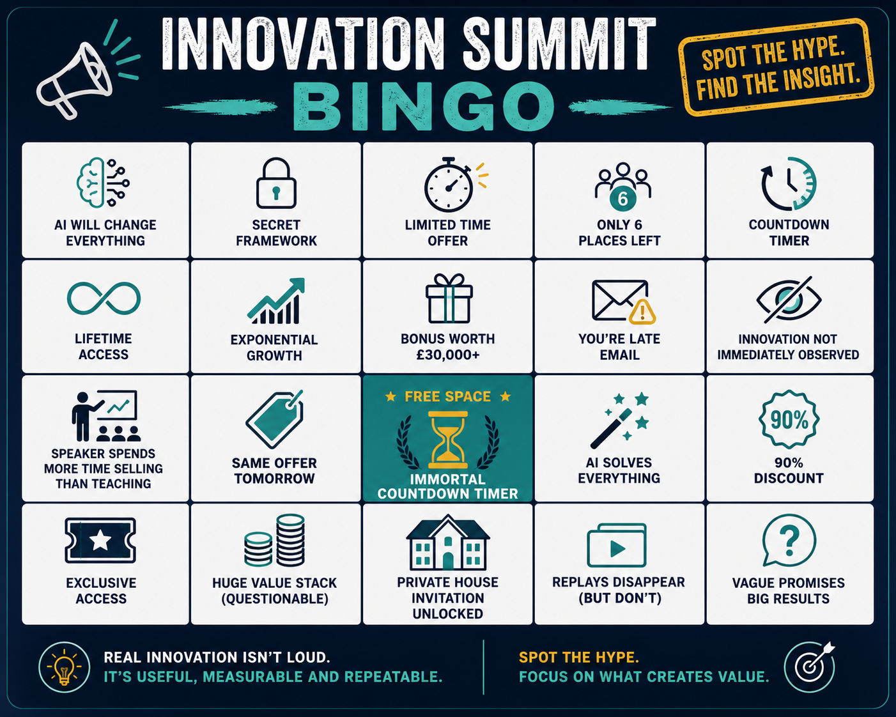

The Bingo Card Was Funny. The Lesson Was Serious.
I attended a multi-day innovation event expecting AI, robotics, data, business transformation and future trends.
Some of that appeared. There were genuinely useful moments around experimentation, AI as a co-pilot, human-centred adoption and the speed of technological change.
But there was also a lot of innovation theatre.
The same offers appeared repeatedly. Countdown timers expired and returned. Replays were apparently disappearing, then somehow remained available.
Bonus packages grew in value at a rate that would make most finance teams nervous.

Innovation Summit Bingo: a light-hearted way to spot when insight is turning into theatre.
Innovation Summit Bingo
If you have attended enough technology, leadership or innovation events, some of these may feel familiar:
- AI will change everything.
- Exponential growth appears before any practical example.
- Limited-time offer.
- Offer expires today, then reappears tomorrow.
- Only a few places left, for quite a long time.
- Huge value stack reduced by 90 percent.
- Secret framework.
- Exclusive access.
- Speaker spends more time selling than teaching.
- Automation email sent to someone already attending the session.
The Best Ideas Were Simple
The strongest sessions were not the loudest or the most dramatic. They were the most practical.
The most useful messages were:
- Start small.
- Experiment quickly.
- Fail fast and learn.
- Use AI as a co-pilot, not a replacement for judgement.
- Increase efficiency, but also increase the human touch.
- Bring diverse voices into innovation because good ideas can come from anywhere.
That is what real innovation usually looks like. Not grand claims. Not magic formulas. Not urgency for urgency's sake.
Just people trying things, learning, adapting and scaling what works.
The Best Accidental Case Study: Bad Automation
One of the most useful moments came from a poor automated email.
During the event, I received a message telling me I was late to a session I was already attending.
It also referenced a speaker that did not match the session banner.
That small mistake says a lot.
The problem was not AI. The problem was poor data, poor process design and weak governance.
The automation did what it was told to do. The issue was that the underlying logic and data were not good enough.
This Is Why Trusted Data Matters
AI does not remove the need for trusted data. It increases it.
If the source data is wrong, the segmentation is poor, the business rules are unclear or the process has not been properly designed,
automation will simply make poor decisions faster.
That is where organisations often go wrong. They invest in AI before fixing the operational foundations that AI depends on.
AI Can Accelerate Data Improvement
There is another side to this.
AI can help identify and improve poor-quality data much faster than traditional manual review.
It can help spot duplicates, missing values, inconsistent naming, unusual patterns and likely errors.
But AI should accelerate governance, not replace it.
People still need to validate, prioritise, approve and understand the business context.
The opportunity is not to let AI take over. The opportunity is to use AI to find the critical issues faster and focus human effort where it matters most.
The Real AI Challenge Is Change Management
The biggest AI challenge is not usually the model.
It is helping people, teams and organisations adapt.
That means:
- Training people properly.
- Reducing fear and confusion.
- Redesigning processes.
- Creating governance.
- Building trust.
- Showing practical use cases.
- Starting small and proving value.
Technology adoption fails when people are left behind.
AI and people need to move together.
Most organisations do not fail because the AI model is wrong.
They fail because ownership is unclear, adoption is weak, success measures are undefined and the business is not prepared to change.
Successful adoption should be measured.
Organisations should define the operational, financial or customer outcomes they expect to improve before deployment begins.
If benefits are not measured, success becomes opinion rather than evidence.
AI should create more time for people, not less.
Innovation Theatre vs Real Innovation
Innovation theatre creates noise.
Real innovation creates evidence.
Innovation Theatre
- Big claims.
- Artificial urgency.
- Vague outcomes.
- Overstated value.
- Little evidence.
- More selling than teaching.
Real Innovation
- Clear problem.
- Practical experiment.
- Measured outcome.
- Lessons learned.
- Evidence of value.
- Path to scale.
- Business ownership.
Innovation Tolerance Tablets
After enough conferences, most leaders develop a healthy filter for overstatement.
Mine has a name: Innovation Tolerance Tablets.
Take one whenever a session moves from practical evidence into artificial urgency, vague promises or a bonus package that appears to be growing faster than the business case.
May reduce hype sensitivity
May increase evidence requests
Best taken with coffee
Not valid with mystery boxes
The Useful Question
The most useful question from the event was not whether AI will change everything.
It probably will.
The better question is:
Where can AI help us improve something important, quickly, safely and measurably?
That question moves the conversation away from hype and towards value.
It also forces organisations to think about data quality, governance, adoption and measurable outcomes.
What Leaders Should Look For
The best innovation conversations do not ask people to suspend judgement. They invite scrutiny.
Evidence
Can the claim be tested, measured or explained with real examples?
Relevance
Does the idea solve a real problem for this organisation, or is it just interesting?
Adoption
Can people realistically use it, trust it and change the way they work?
Ownership
Who is accountable for ensuring value is realised, adopted and sustained?
The Takeaway
The future will not belong to organisations that chase every shiny new tool.
It will belong to organisations that can separate evidence from hype, identify where AI can genuinely improve outcomes,
and build the trusted data, governance, ownership, adoption and change management needed to make it work.
Innovation does not need a countdown timer.
It needs a real problem, a practical experiment, trusted data and people willing to learn.